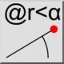
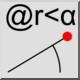
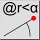
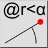

Относительная полярная позиция
Панель инструментов / Иконка:
 

Меню: Информация > Относительная полярная позиция
Горячая клавиша: I, T
Команды: infopospolrel | it
Это автоматический перевод.
Панель инструментов / Иконка:
 

Меню: Информация > Относительная полярная позиция
Горячая клавиша: I, T
Команды: infopospolrel | it
This tool outputs the relative, polar coordinates of chosen points in the drawing.